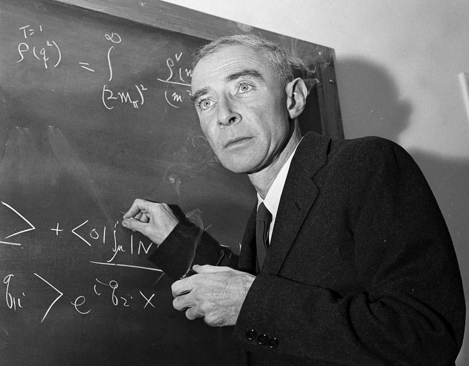
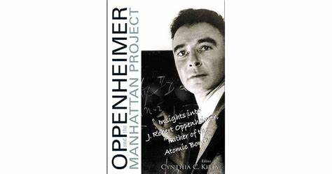
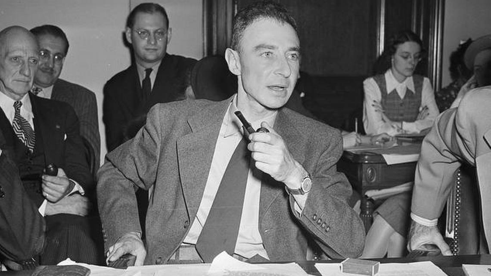

Início da Vida
Julius Robert Oppenheimer nasceu em 22 de abril de 1904, na cidade de Nova Iorque, EUA, em uma família de imigrantes judeus. Desde cedo, mostrou talento excepcional em matemática e ciências, ingressando na Universidade Harvard aos 18 anos, onde obteve seu diploma de bacharel em química em apenas três anos. Ele continuou seus estudos na Universidade de Cambridge, na Inglaterra, antes de concluir seu doutorado na Universidade de Göttingen, na Alemanha, sob a orientação de Max Born.
Carreira Acadêmica
Após concluir seus estudos na Europa, Oppenheimer voltou aos Estados Unidos e rapidamente ganhou reconhecimento por suas contribuições à física teórica. Ele se tornou professor na Universidade da Califórnia, Berkeley, onde desenvolveu pesquisas pioneiras em física quântica e teoria quântica de campos. Suas contribuições nessa área foram fundamentais para o entendimento da estrutura atômica.
Projeto Manhattan
Em 1939, com o início da Segunda Guerra Mundial, Oppenheimer foi recrutado para o Projeto Manhattan, um programa ultrassecreto destinado a desenvolver a primeira bomba atômica. Ele desempenhou um papel de liderança na equipe de cientistas que trabalharam no Laboratório de Los Alamos, no Novo México, onde as pesquisas e testes foram conduzidos.
A Bomba Atômica
Em 1945, o Projeto Manhattan culminou com o lançamento bem-sucedido da bomba atômica em Hiroshima e Nagasaki, eventos que marcaram o fim da Segunda Guerra Mundial. A contribuição de Oppenheimer para o projeto foi imensurável, e ele é frequentemente considerado o "pai da bomba atômica". No entanto, a realização desse feito também trouxe à tona questões éticas e morais profundas sobre o uso da tecnologia nuclear.

Pós-Guerra e Conflitos Éticos
Após a guerra, Oppenheimer passou a ter preocupações crescentes sobre o uso da bomba nuclear. Ele se tornou um defensor fervoroso do controle internacional de armas nucleares e, ao mesmo tempo, expressou remorso pelo uso das bombas em Hiroshima e Nagasaki. Sua postura em relação ao armamento nuclear o colocou em conflito com alguns setores do governo dos Estados Unidos, levando a uma revogação de sua autorização de segurança em 1954.
